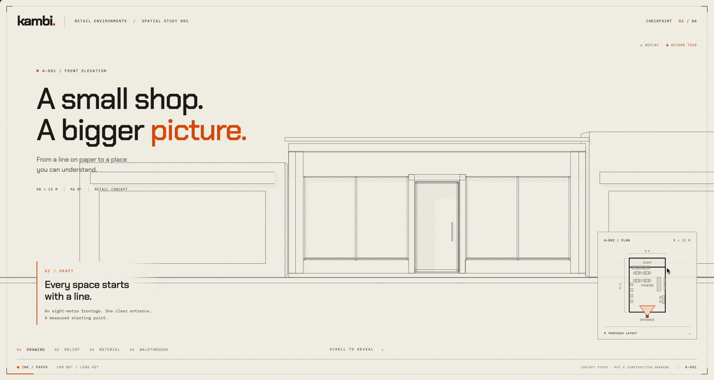
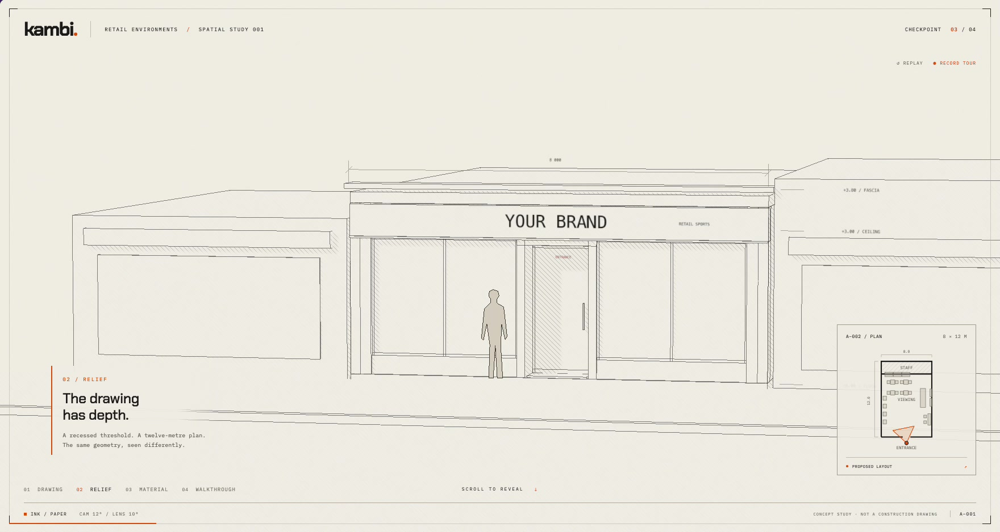
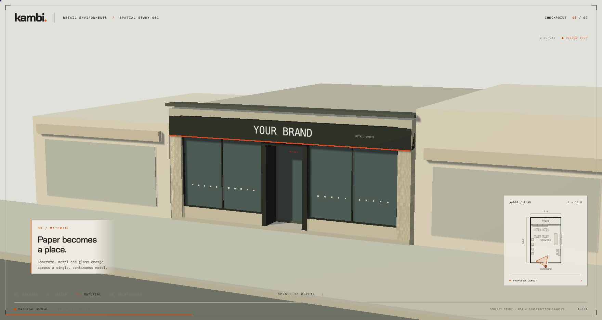
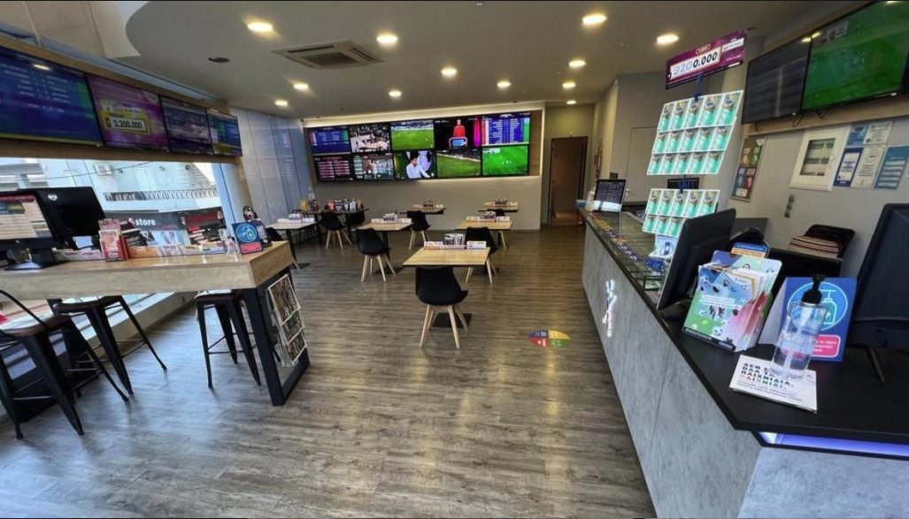
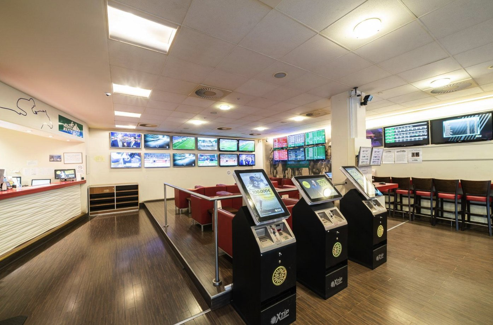
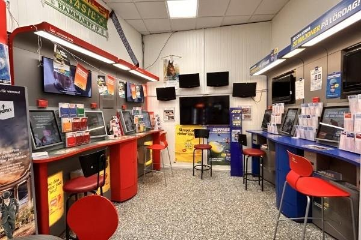
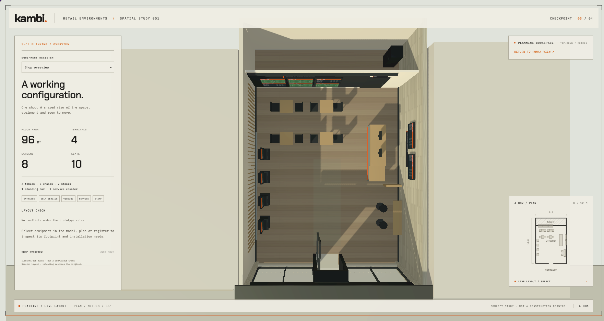
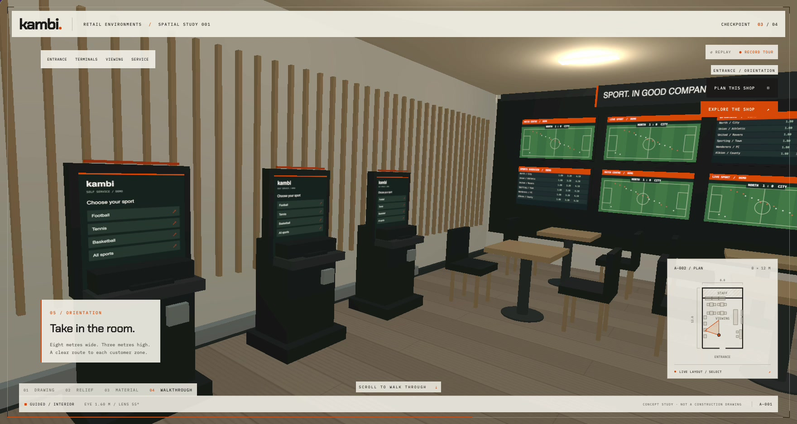
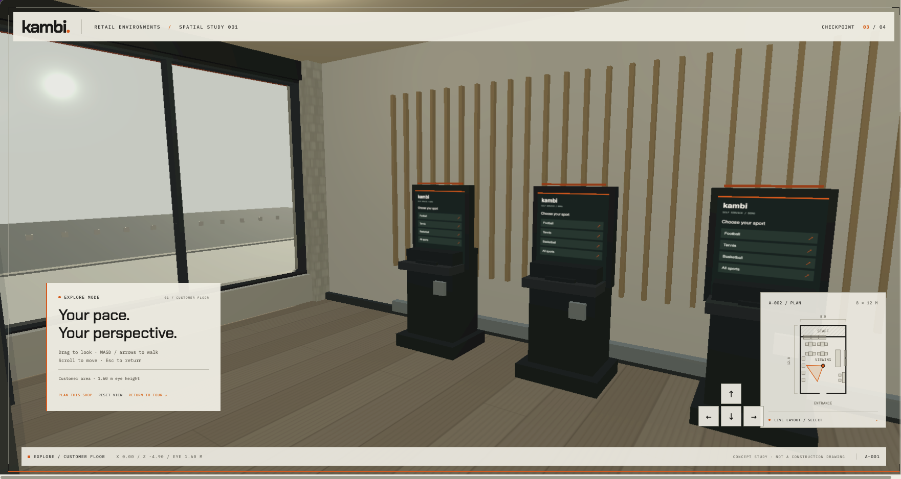
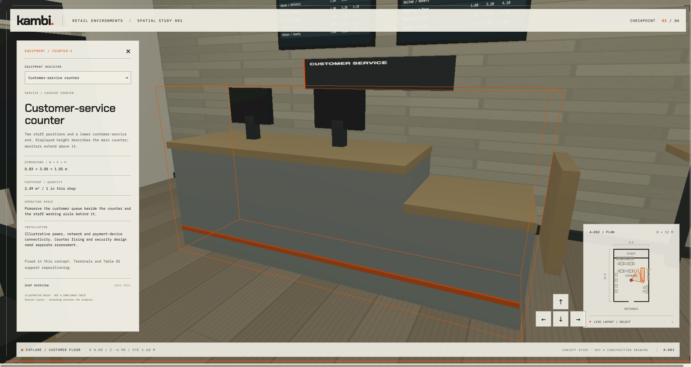

KAMBI · RETAIL PLANNING CONCEPT
Plan the shop before it exists.
An independent UX concept exploring how betting operators could plan and equip a physical shop. Moving between an architectural overview, a human perspective, and an interactive floor plan, the prototype makes equipment, circulation, and spatial decisions easier to understand.
A floor plan shows where things go. It doesn’t show how the shop feels.
Planning a betting shop means coordinating equipment, furniture, screens, service areas, and the people moving between them.
A terminal may fit within a floor plan while leaving too little room for someone to use it. Seating may face the screens but interrupt a circulation route. These relationships are harder to judge when drawings, equipment specifications, and interior views remain separate.

- Understand the room before placing equipment.
- Connect each object’s dimensions to the space needed around it.
- Keep entrances, customer routes, and service areas legible.
- Make the consequences of a layout decision visible.


Different shops. Connected planning decisions.
The reference interiors range from dedicated betting shops to a smaller Swedish tobacco-and-betting store. They show different arrangements of terminals, screens, seating, and service counters—and provided a starting point for the representative shop model.
I used these references to frame three design questions: can customers find the information they need, move between activities, and access staff assistance? These questions informed the prototype’s focus on visibility, circulation, and equipment in context.



One shop. Three ways to understand it.
The concept brings three views of the same environment together: the building as an architectural drawing, the shop at eye level, and the layout as a planning workspace. Each answers a different question.
Architectural overview
How large is the shop, and how is the space organized?
Human perspective
What can someone see, reach, and move around once inside?
Planning workspace
What equipment is required, where does it sit, and what happens when it moves?

The representative shop measures 8 × 12 metres, with four betting terminals, eight screens, and distinct customer and staff zones. These dimensions establish a concrete setting for exploring the interactions.

Make the next spatial decision easier to judge.
Preserve orientation.
Connect the camera journey to a persistent floor plan, so visitors can understand where they are and which direction they are looking.

Explain equipment in context.
Selecting an object brings together its dimensions, footprint, operating space, and conceptual installation needs.

Make movement deliberate.
Separate the guided tour, Explore Mode, and planning workspace. Visitors can choose their level of control without learning every interaction at once.
Show the consequences of placement.
Use placement feedback to make object collisions, circulation conflicts, and clearance concerns visible before a position is confirmed.
From a presentation to a working conversation.
The architectural reveal provides an accessible introduction. The walkthrough makes the layout tangible. The planning view then connects that understanding to equipment and placement decisions.
Together, these modes give an operator something concrete to inspect and discuss: where customers enter, how equipment occupies the room, and how a layout change affects the surrounding space.
A concept for exploring decisions before committing to a layout.
The prototype demonstrates how architectural storytelling and contextual planning tools can work together in one environment.
Curious to explore the space yourself?
Explore the prototype (opens in a new tab)
The next step is to evaluate whether operators can understand equipment requirements, identify layout conflicts, and move confidently between the different views.
Equipment dimensions and planning rules are illustrative. This independent concept has not been validated as a construction, accessibility, or regulatory compliance tool.